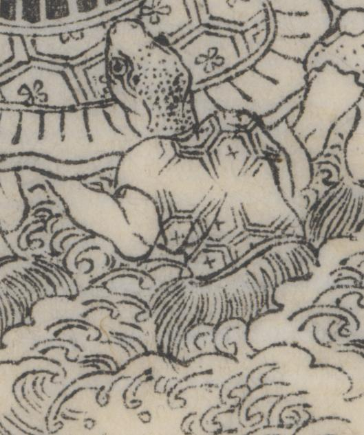

龍神が亀に化して仏舎利を鑑真に捧げている。亀頭人身。亀甲模様の肩当てをしている。腰蓑。
著作者：秋里翁・西村中和／出典：親書誌：U426_nichibunken_0446：本朝年代記圖會／日付：2017／資源識別子：U426_nichibunken_0446_0019_0002
Copyright (c)2010- International Research Center for Japanese Studies, Kyoto, Japan. All rights reserved.